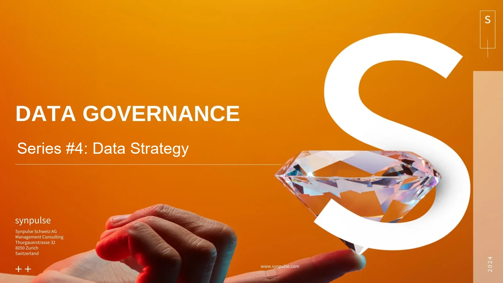
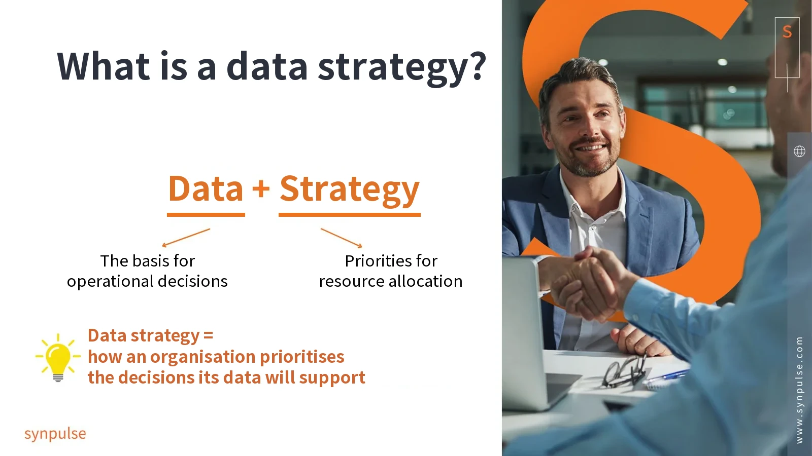
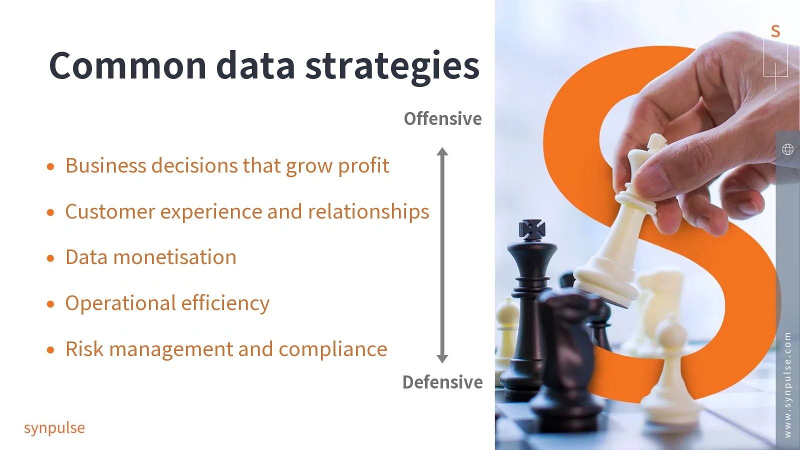
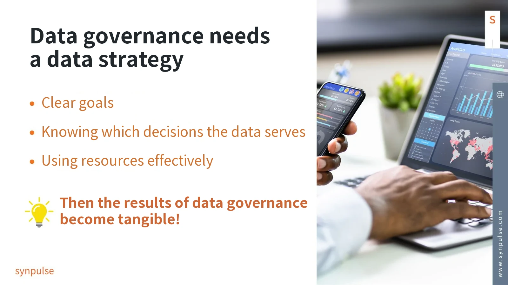

💡[Data Governance #4] Data Strategy
Financial institutions have long accepted that data governance matters, yet it rarely comes first when resources are allocated. Over the past few years, the rise of data science, AI and now generative AI (GenAI) has changed that: each step forward in the technology has forced data governance further into the spotlight. This series looks at data governance from several angles.

This article looks at data strategy within data governance.
A data strategy is more than a roadmap for handling data. It sets out an organisation’s vision for its data and aligns data management practice with your business goals. Without a data strategy, data governance can turn into a rigid compliance exercise, cut off from the organisation’s goals and with no visible results.
Why does defining a data strategy matter so much for data governance?

1️⃣ Clear goals: a common problem in data governance is not knowing what you are fighting for. Defining a clear data strategy brings the whole organisation onto the same strategic goals.
2️⃣ Knowing which decisions the data serves: once the goals are set, they can be turned into action plans. As those plans are carried out, it also becomes clear which decisions the data will be used to make.
3️⃣ Using resources effectively: people, time and budget are always limited. With a data strategy, an organisation can judge correctly where to put its resources, with less conflict, rework and waste.

Overall, one of the most common criticisms of data governance is that it consumes a lot of resources without producing clear results, and the lack of a clear data strategy may well be the main reason. A data strategy makes the results of your data governance more tangible and helps your data bring more value to your organisation.
Originally published in Chinese on LinkedIn.